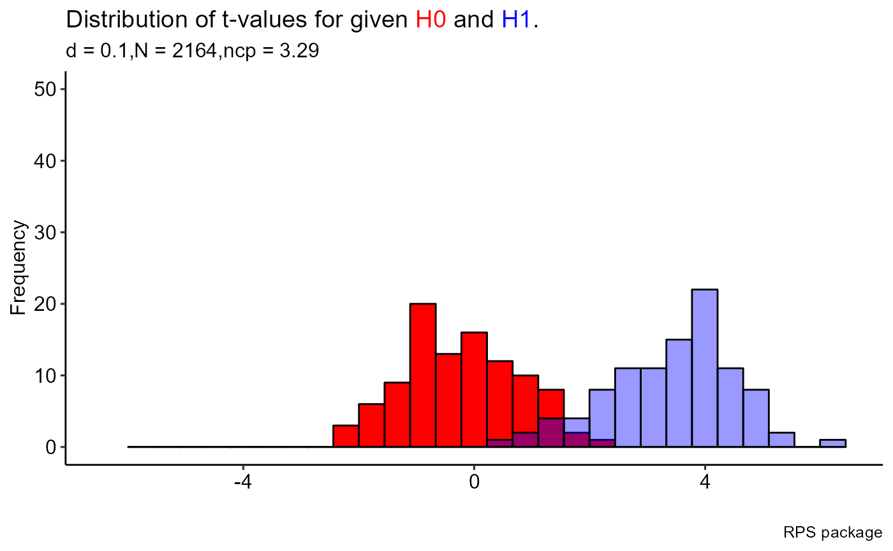

Intro_RPS.RmdThe goal of RPS package is to provide the functionality for the Research Program Strategy (RPS) as explained in the article “Hypothesis-testing demands trustworthy data-a simulation approach to inferential statistics advocating the research program strategy” by Krefeld-Schwalb, Witte & Zenker (2018). For more details about the theory, please have a look at the main paper and related technical appendix document:
Main paper: https://www.frontiersin.org/articles/10.3389/fpsyg.2018.00460/full
Appendix: https://osf.io/gaetn/
Every step of our simulation mimics 100 t-values for one-sided t-tests sampled from two normal distributions featuring the same variance but different means. One mean is set to zero (x0), the other mean corresponds to the effect size \(\delta\) of the focal condition (x1), such that \(\displaystyle x1\sim Normal(\delta,1)\) and \(\displaystyle x0\sim Normal(0,1)\) The following equation is used o define the sample size, \(N_{min}\), drawn from these distributions that is needed to achieve the power \((1-\beta)\) given \(\alpha\)-error, and the effect size \(\delta\).
\[\begin{equation} N = (z(1-\alpha)+z(1-\beta))^2/(\delta/\sqrt(2))^2 \end{equation}\] We next calculated the t-value based on the difference of the means, \(\mu\), of these distributions.
\[\begin{equation} \displaystyle t = (\mu_{x1}-\mu_{x0})/\sqrt{2/n}\end{equation}\]
The consecutive steps of the research program strategy (RPS) is summarized below;
Preliminary Discovery:\(p \leq \alpha, \alpha \leq .05\), unknown \(\beta\)
Substantial Discovery: \(p \leq \alpha,\alpha \leq .05\), known \(\beta\)
Preliminary Falsification: \(\displaystyle\frac{L(d>0|x)}{L(d=0|x)} > \frac{1-\beta}{\alpha}\)
Substantial Falsification: \(\displaystyle\frac{L(d>\delta|x)}{L(d=0|x)} > \frac{1-\beta}{\alpha}\)
Preliminary Verification: \(\displaystyle\frac{L(d =\delta|x)}{L(d=0|x)} > \frac{1-\beta}{\alpha}\)
Substanstial Verification:\(\displaystyle\frac{L(d =\delta|x)}{L(d=0|x)} > \frac{1-\beta}{\alpha} \cap \frac{L(d|x)}{L(d=\delta|x)} > \frac{pdf(P50|d)}{pdf(P95|d)} > 4\)
In order to calculate these proportions we use the density of the respective t-distributions and calculated the one-sided p-values, p, as well as the likelihood, L. The Wald-criterion, \(\frac{1-\beta}{\alpha}\), is applied for interpreting the corresponding likelihood ratios in steps 3 to 5. As a criterion for substantial verification in step 6 we further use the ratio of the probability density function, pdf, at the \(50\)’th and \(95\)’th percentiles, \(P50\) and \(P95\), respectively.
## Number of simulated tests
Nsample = 100
## Level of significance
alpha = 0.05
### Different effect sizes
effectSize = 0.2
### Different Power
pow = 0.95Here, in the simulation example, the goal is to estimate the minimum sample size \(N_{min}\) by using the effect size, \(\delta\), and test power, \((1-\beta)\), which together determine the induction quality of data, between the conditions, \(d=\) [0.2] and \((1-\beta)=\) [0.95].
For the above parameters, the estimated sample size is obtained as;
samph1 <- RPS::samplesH1(Nsample = 100, alpha=alpha, effectSize = effectSize, pow = pow)
round(samph1$Nest, 0)## [1] 541For the visualizations of the output, separate functions are given in ModelVis.R file and the wrap-up function (plot_RPS.R) is ready to use by selection of the figures when all the necessary inputs are provided. Distinctly, the ggplot2 syntax was used for all figures in the package so the obtained graphs are different from the ones you observed in the Shinny app!
The main tool is plot_RPS.R, as a wrap-up function to make a general visualization of the outputs by making selection. To illustrate,
sampH0 <- RPS::samplesH0(Nsample = 100, alpha = 0.05, effectSize = 0.1,
pow = 0.95)
sampH1 <- RPS::samplesH1(Nsample = 100, alpha = 0.05, effectSize = 0.1,
pow = 0.95)
sampEmp <- RPS::samplesEmp(Nsample = 100, N = 30, Temp = 3, alphaEmp = 0.05)
# About plotting, you can consider different selections by select argumen
RPS::plot_RPS(sampH0 = sampH0, sampH1 = sampH1, sampEmp = sampleEmp, select = 1)## `stat_bin()` using `bins = 30`. Pick better value with `binwidth`.
## `stat_bin()` using `bins = 30`. Pick better value with `binwidth`.
One can use the Figure functions separately,
sampH1 <- RPS::samplesH1(Nsample = 100, alpha = 0.05, effectSize = 0.2, pow = 0.95)
# Run this function manually if you want from ModelVis.R script
# Make sure that all necessary packages are already installed and ready to use
# lapply(c("ggplot2", "ggpubr", "ggtext"), require, character.only = TRUE)
# figure1(sampH1)For the tabularization of the outputs, separate functions are given in TableOutputs.R file and the wrap-up function (table_RPS.R) is ready to use by selection of the different tables when all the necessary inputs are provided. Similar to visualization, ready to publish tables are generated by using gt package.
# The below results are necessary before creating tables generally
# By using sampleH1
samp30 <- RPS::samples30(Nsample = 100, alpha = 0.05, effectSize = 0.2,
pow = 0.95, samp = sampH1)
sampEmp0 <- RPS::samplesEmp0(Nsample = 100, N = 30, Temp = 3, alphaEmp = 0.05)
# The creation of the
# Table 1: Proportion of correct positive results (prior to data collection)
RPS::table_RPS(sampH0 = sampH0, sampH1 = sampH1, sampEmp = sampEmp,
sampEmp0 = sampEmp0, samp30 = samp30, select = 1)| Step in RPS | Proportion |
|---|---|
| 4. Substantial Falsification | 0.87 |
| 5. Preliminary Verification | 0.8 |
| 6. Substantial Verification | 0.74 |
| False Negatives: Substantial Falsification - Substantial Verification | 0.13 |
| Substantial Verification if N'= N + N/2 271 , 1-beta= 0.99 | 0.83 |